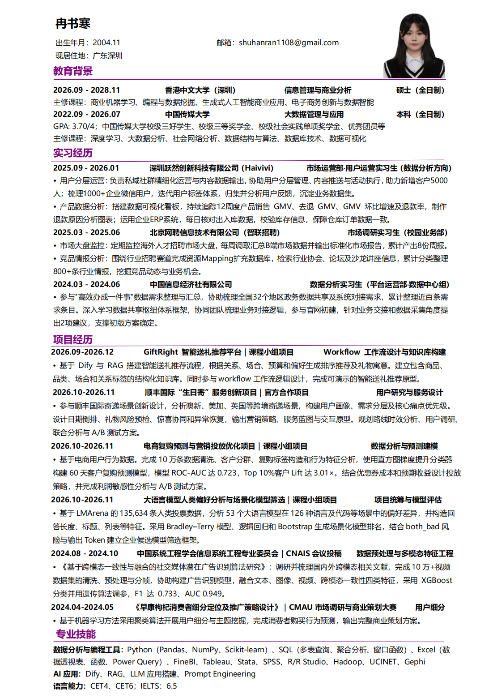

香港中文大学（深圳）
信息管理与商业分析
主修课程
- 商业机器学习
- 编程与数据挖掘
- 生成式人工智能商业应用
- 电子商务创新与数据智能
DATA · BUSINESS · AI
HELLO, I AM
用数据理解真实世界，也把复杂问题讲得清楚。
数据分析 · 商业洞察 · AI 应用
靠近不同入口，我会切换对应的探索状态
移动棒棒糖唤醒花草涟漪 · 靠近入口切换人物状态
从大数据管理与应用走向信息管理与商业分析，关注数据如何进入真实业务决策。
PROFILE信息管理与商业分析
大数据管理与应用 GPA 3.70 / 4.00

简历原件包含个人联系方式，请仅在确有需要时下载查看。
围绕用户运营、市场研究与数据协同，从业务问题出发搭建分析路径。
3 段经历私域用户与产品经营数据
海外招聘市场与行业情报数据
政务数据
从推荐系统、服务设计到预测建模，关注“分析结果如何真正进入决策”。
精选项目围绕关系、场合、预算与偏好建立知识结构，完成可演示的送礼推荐流程原型。
分析跨境寄递场景，构建用户画像、需求分层和核心痛点优先级，输出服务蓝图与交互原型。
基于 10 万条用户行为数据完成清洗、分群、标签与特征分析，构建复购预测模型。
分析多场景投票数据，以 Bradley–Terry 模型、逻辑回归与 Bootstrap 建立候选模型筛选框架。
技能不是孤立的软件清单，而是一套从数据到判断、再到表达的工作链路。
持续更新01
02
03
04
本科阶段的 12 个项目图集。点击任意封面可查看研究结果图。
12 个项目